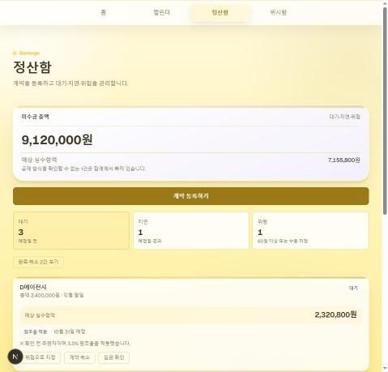
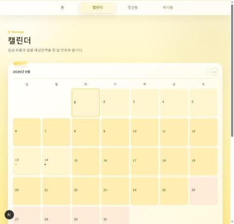
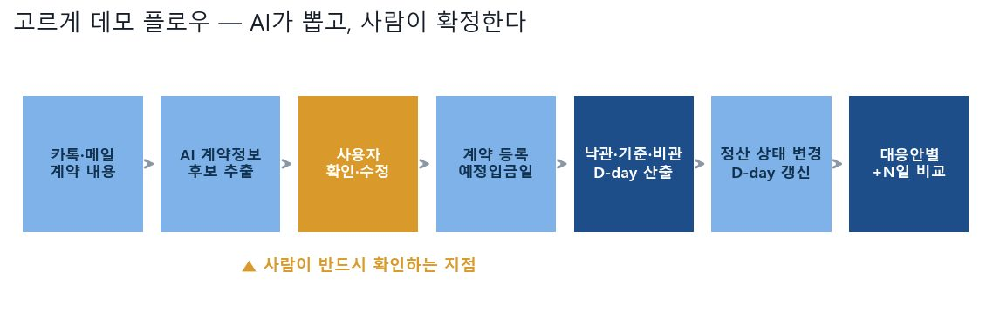

고르게 (Goreuge)
프리랜서의 미수금 지연이 현금흐름에 미치는 영향을 계산해, 언제까지 버틸 수 있는지 D-day로 보여주는 MVP
5일 안에 흩어진 문제를 D-day 하나로 압축해 동작하는 MVP까지 만든다.
- 프리랜서에게 위험한 건 소득이 적은 게 아니라 언제 들어올지 모르는 것입니다.
- 계약 내용을 AI가 읽어 후보로 띄우고 사람이 확정한 뒤, 낙관·기준·비관 세 시나리오로 버틸 수 있는 날짜를 계산했습니다.
- 5일 만에 동작하는 MVP를 만들었고, 팀 전체 커밋 189건 중 115건을 담당했습니다.




옆으로 넘겨 보세요 · 전체 4장
문제
"아직 들어오지 않은 대금이 지연될 때, 나는 언제까지 버틸 수 있고 무엇을 바꿔야 하는가." 이 질문에 숫자로 답하는 도구를 5일 안에 만드는 것이 과제였습니다.
접근
- 계약 내용을 LLM으로 파싱해 후보를 추출하고, 사용자가 확인·수정한 뒤에만 등록되게 했습니다.
- 잔액·고정지출·예비금을 받아
낙관 · 기준 · 비관세 시나리오로 버틸 수 있는 날짜를 계산했습니다. - 정산 상태가 바뀔 때마다 D-day를 재계산해 상황 변화가 즉시 숫자로 보이게 했습니다.
- 대응안별로 며칠을 더 벌 수 있는지(
+N일)를 비교해 사용자가 행동을 고를 수 있게 했습니다.
결과
5일 안에 온보딩 · 홈 · 정산함 · 계약 파싱 · D-day 재계산 · 대응안 비교까지 동작하는 형태로 완성했습니다. 팀 전체 커밋 189건 중 115건을 담당했습니다.
직무와의 연결
이 프로젝트에서 제가 한 것
- 사용자 흐름 설계와 화면 구현 — 계약 등록부터 D-day 확인, 대응안 비교까지 (
web/app·web/components) - AI가 뽑은 계약 정보를 사용자가 확인·수정한 뒤에만 등록되게 하는 흐름 설계
- 통합과 코드 리뷰 — 세 갈래로 갈라진 브랜치를 합치고, 리뷰에서 나온 지적을 각 PR에 반영했습니다. 담당이 아닌 현금흐름 엔진과 AI 파싱 쪽도 이 과정에서 함께 손봤습니다 (죽은 정렬 조건 제거, 리뷰 3건 반영 등)
- 테스트 보강 — 저장소에서
test/를 가장 많이 건드렸습니다 - 배포와 제출물 최종 책임, 5일 MVP 범위를 P0/P1/P2로 자르는 판단
기술 선택과 판단 근거
왜 그 방법을 택했는지, 무엇을 택하지 않았는지 적었습니다.
AI 추출 결과를 확정이 아니라 후보로 띄웠다
금액 하나가 틀리면 D-day 전체가 틀리고, 사용자는 왜 틀렸는지 알 방법이 없습니다. 확인 단계를 넣어 사람이 마지막으로 책임지는 구조로 만들었습니다.
D-day를 하나가 아니라 세 개로 보여줬다
"32일 버틸 수 있습니다"는 정확해 보이지만 가정 하나만 바뀌어도 흔들립니다. 단일 숫자는 불확실성을 숨깁니다. 세 시나리오를 나란히 두자 사용자가 범위로 이해했습니다.
막혔던 지점과 해결
MVP 범위를 P0 / P1 / P2로 먼저 잘랐다
5일에 넣고 싶은 기능은 많았습니다(위시 적립, 세금 봉투, 건강보험 알림, 계좌 연동). 전부 손대면 아무것도 안 끝납니다. 데모 흐름 한 줄이 끝까지 돌아가는 것을 P0로 두고 나머지는 기획으로만 제시했습니다.
더 자세히
관심 있는 항목만 펼쳐 보세요.
이 프로젝트가 시작된 배경
프리랜서와 N잡러를 무너뜨리는 건 소득의 크기보다 들어오는 시점의 불확실성입니다. 대금 지급일이 밀리면 이번 달 고정지출을 감당할 수 있는지가 즉시 불확실해지는데, 개인 가계부 앱은 이미 들어온 돈만 다루고 회계 소프트웨어는 개인에게 과합니다.
데이터
회고
개인 재무 도구에서 숫자보다 중요한 건 그 숫자를 믿게 만드는 과정이었습니다. AI가 뽑은 조건을 사용자가 확인하게 한 것도, D-day를 세 개로 준 것도 같은 이유였습니다.